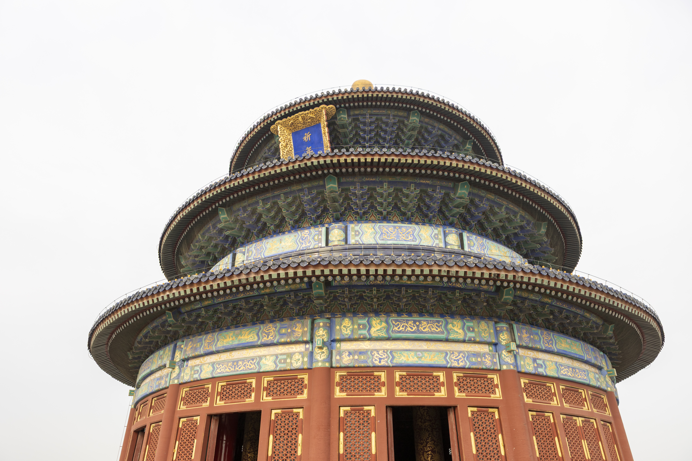
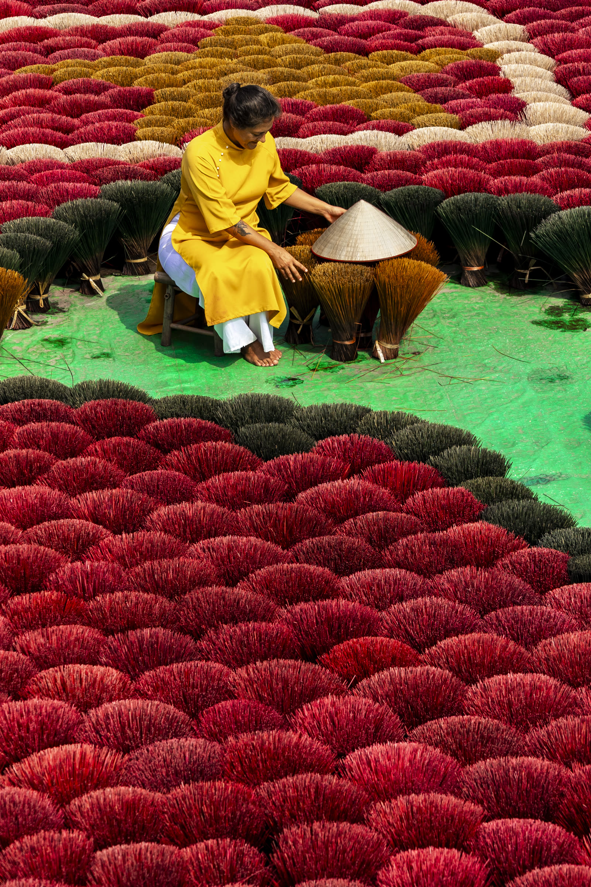
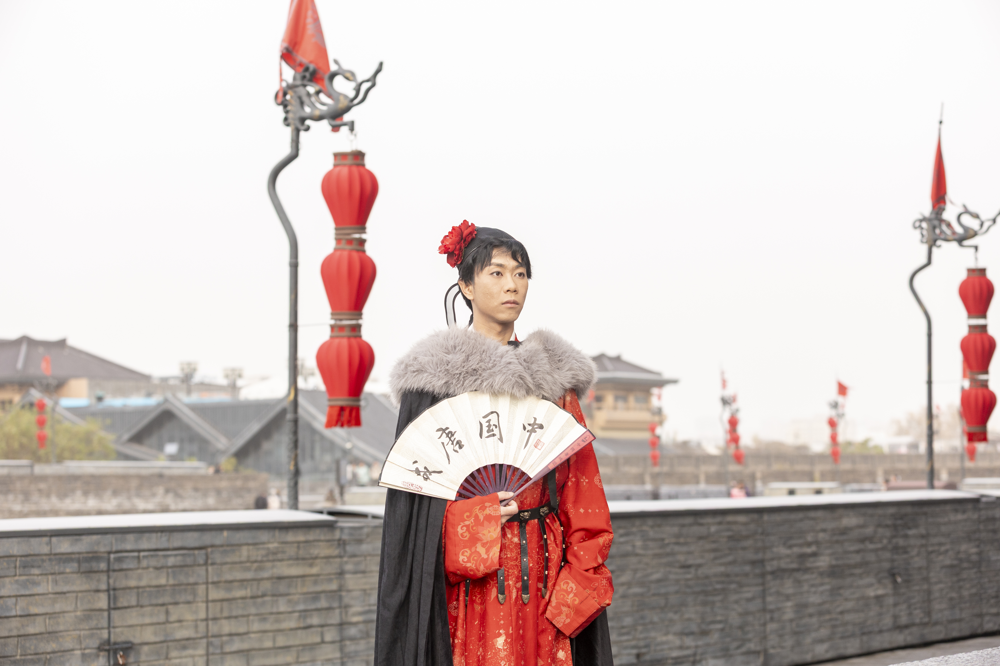

01 / THE PLACE
Set the scene.
Show the destination, its landscape and the setting of the experience.

A PROPOSAL FOR NAVIASIA · FITUR 2027
Photography and film to bring your journeys across Asia to life.
Explore the proposal ↘01 / THE OPPORTUNITY
NaviAsia creates tailored journeys and experiences across Asia. We propose an original visual production that helps your team present those experiences to travel partners and clients.
From the landscape that draws people in to the local guides, food and encounters that make a trip memorable, we create images your team can use to tell the story of an actual itinerary.
DISCOVER NAVIASIA ↗02 / THE VISUAL STORY
Explore the moments a commissioned production could bring together, shaped around the experience you choose.

Show the destination, its landscape and the setting of the experience.

Tell the story through local hosts, crafts, food and encounters.

Give your partners a sense of the character and atmosphere of a journey.
Portfolio photographs © Juan Aizpuru. These images illustrate the visual approach and do not represent NaviAsia products.
03 / WHAT WE CAN CREATE
Choose a destination and the experiences you want to promote. We travel there to create new photography and film, working with your local team.
Original photography and film for your website, proposals and travel partners. Your team builds the campaign.
We can also develop the campaign concept with you, from the story and on-location production to final edits.
We work alongside your guides and local partners to reach the people and places behind the itinerary.
04 / HOW WE WORK TOGETHER
We start with a conversation: which destination, experiences and clients matter most to NaviAsia? Together we define the production, duration, formats and permitted uses.
Juan retains authorship and ownership of the work. Usage rights and any required permissions are agreed for the project.
FITUR 2027 / MADRID
Adrian, I would love to learn which experiences NaviAsia wants to bring into focus and discuss how we could help.
VIEW MY PORTFOLIO ↗Connect with Juan Aizpuru on FITUR LiveConnect to arrange a meeting.